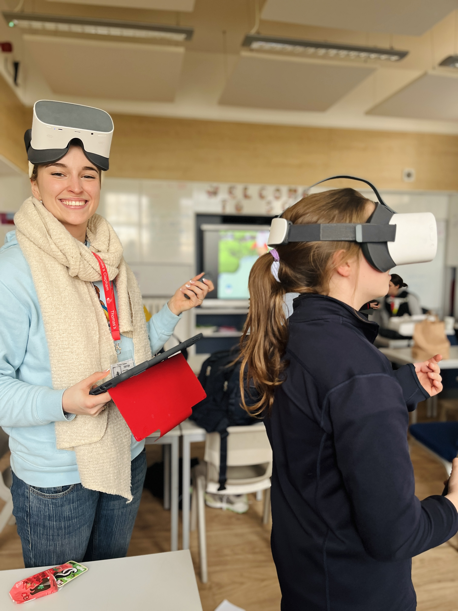
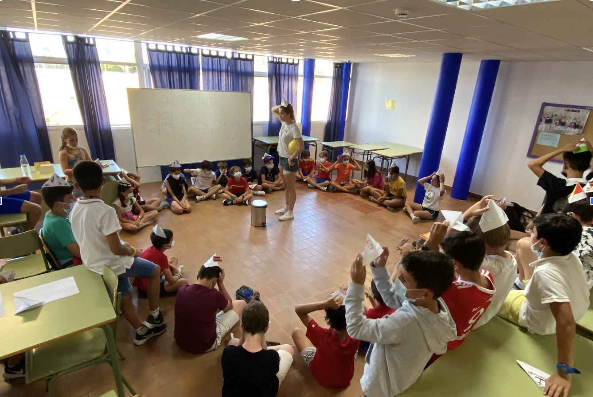

"Hi! I'm a Creative Technologist and coder with a keen focus on Human-Computer Interaction. My expertise spans large language models, UX design, and developing educational toys and hardware. With years of experience as a nanny and teaching at summer camps, coupled with a year of teaching coding and robotics to children in schools across London, I bring a unique perspective to educational technology. Passionate about enhancing language learning and educational experiences for children, I strive to blend advanced technology with intuitive design to create engaging products that foster essential skills and inspire young learners."